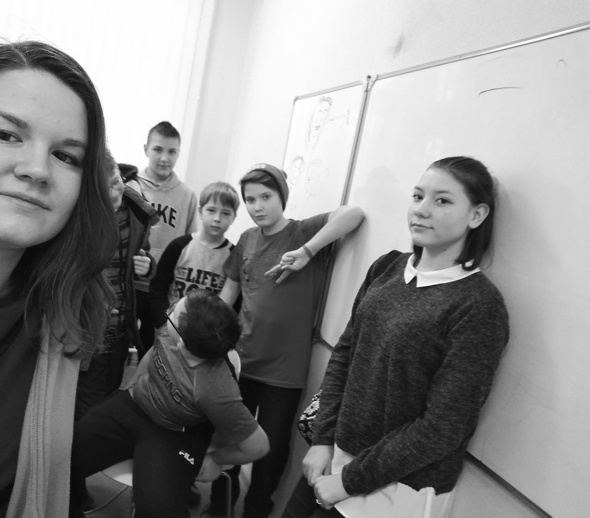
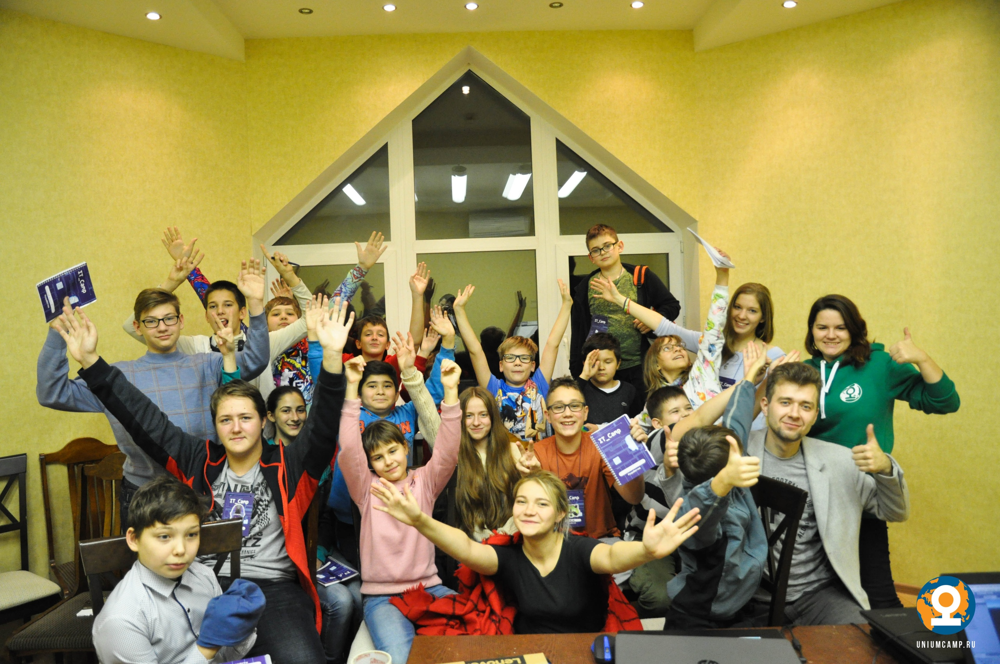

Добро пожаловать! Я очень рада видеть Вас у себя в гостях! Волнушкина Евгения Александровна. Родилась 24 июля 1996г в Нижнем Новгороде. Закончив школу в 2014 году, поступила в ННГУ им. Лобачевского на направление "Бизнес-информатика". Очень скоро поняла, что экономика это не моё, параллельно с учебой вела активную студенческую жизнь: много фотографировала, снимала видеоролики и организовывала лагеря. В 2017 году пошла работать в прекрасную компанию "Юниум". Именно здесь я поняла, что хочу учить детей. В 2018 году закончила ННГУ с красным дипломом. Сейчас я езжу в лагеря преподавателем и наставником и веду Компьютерные курсы для школьников. Чувствую, что иногда теоретической и психологической базы не хватает. Для этого я и поступила в НИРО - профессиональная переподготовка по программе "Педагогика". |
||||
Мои ученики  |
||||